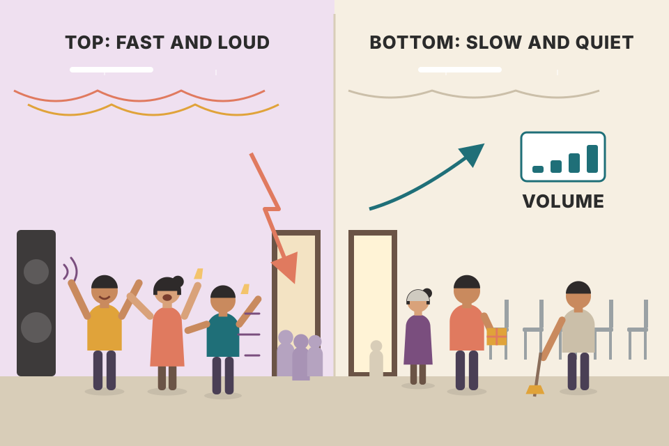
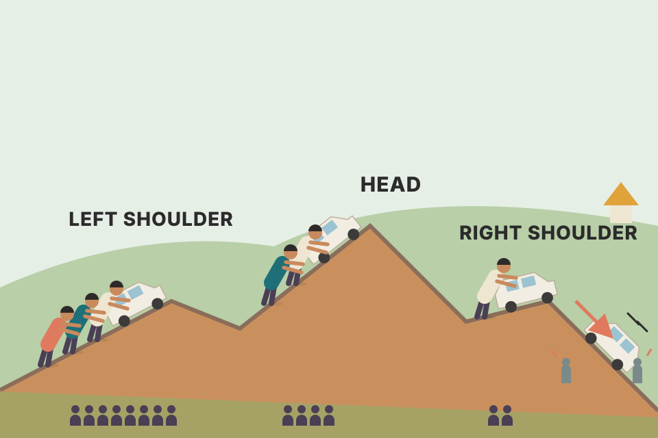
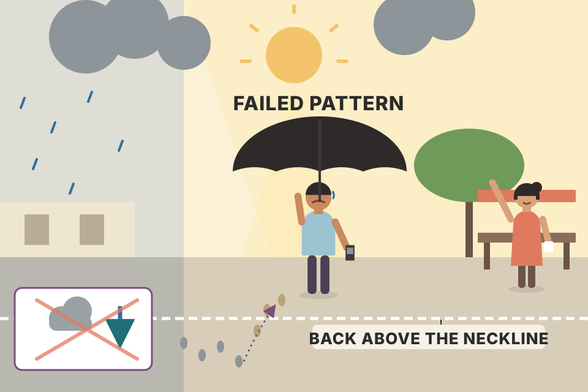
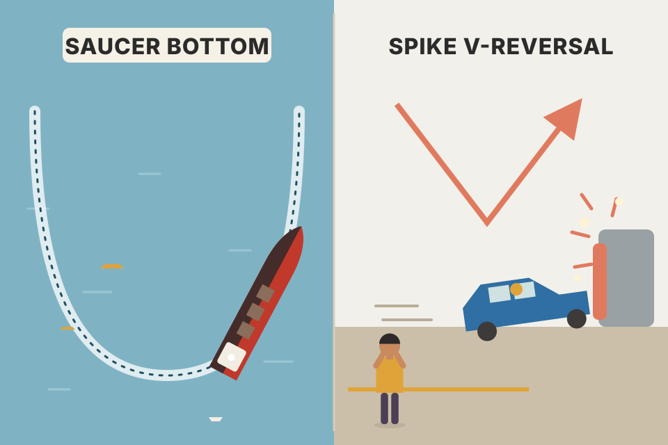

The whole chapter in plain words and in the book's order: head and shoulders (top, bottom, complex, failed), triple and double tops and bottoms, saucers and spikes, plus the rules for confirming a pattern and measuring how far prices should travel. Every chart is a simulated price path built to show one pattern clearly; it isn't real market data. The button below re-rolls the small day-to-day noise so you can see that the shapes, not the exact wiggles, carry the meaning. Boxes with a dashed border are beyond the book: trade plans, stops and pooled simulations I've added to make the rules testable. Murphy gives no stop placement and no hit-rate statistics in this chapter, and none are invented here.
Chapter 4 defined a trend as rising (or falling) peaks and troughs. This chapter is about what happens when that staircase stops and the market goes sideways for a while. Read the chain top to bottom; every section below is one box.
Murphy has so far covered Dow Theory (which he calls the basis of most trend-following work in use today), the ideas of trend (support, resistance, trendlines) and an introduction to volume and open interest. Chart patterns are the next step and they build directly on those ideas. A trend was defined in Chapter 4 as a series of rising or falling peaks and troughs, but markets also spend part of their time moving sideways. Those sideways periods are the subject of this chapter and the next.
Big changes of trend are rarely sudden; they usually need a period of transition. The catch is that a transition doesn't always mean a reversal. Sometimes it is only a pause, and the old trend carries on afterwards.
Price patterns are pictures that appear on stock and commodity charts, can be sorted into categories, and have predictive value. There are two families:
The trick is to tell the two apart as early as possible while the pattern is still forming. Volume plays a confirming role in all of them: when in doubt, the volume pattern can decide whether a pattern can be trusted. Most patterns also come with a measuring technique that gives a minimum price objective. It's only an approximation, but it helps a trader judge reward against risk.
A runner stops and stands still at a crossroads. From behind you can't tell yet whether they'll turn around and go home (reversal) or have just paused to tie a shoelace (continuation). You only find out when they start moving again, and which way.
Inside the shaded box, buyers and sellers are roughly in balance. The box looks identical in both endings; only the exit tells you which story it was. That's why every pattern in these two chapters needs a breakout rule (what counts as leaving the box) before you act, and why the rest of this chapter is mostly about clues that let you guess the exit early: where in the trend the pattern sits, its shape, and its volume.
| Rule | What Murphy means |
|---|---|
| 1. You need a prior trend | A market must have something to reverse. A reversal-looking shape that wasn't preceded by a trend is suspect. Knowing where in the trend a pattern usually appears is a key part of recognising it. Corollary: measuring rules give only minimum targets; the maximum is the whole prior move. After a big bull market, the most a top can do is a 100% retracement, back to where the bull market began. |
| 2. A trendline break often comes first | The first warning is often the break of an important trendline. But a broken major trendline signals a change in trend, not necessarily a reversal: the market may simply start a sideways pattern that later turns out to be either kind. Sometimes the trendline break and the pattern's completion happen together. |
| 3. Bigger pattern, bigger move | "Bigger" means taller and wider. Height measures the pattern's volatility; width is the time it took to build. Wider swings and a longer build make the pattern more important and the following move larger. Almost every measuring rule in Chapters 5 and 6 uses the height (a vertical measure, for bar charts). Measuring the horizontal width is mostly reserved for point and figure charts, whose count assumes a close link between a top's or bottom's width and the later target. |
| 4. Tops are shorter and more volatile | Price swings in tops are wider and more violent, and tops take less time to form. |
| 5. Bottoms are narrower and slower | Bottoms have smaller price ranges but take longer to build. So bottoms are usually easier and cheaper to identify and trade than tops. The consolation for tops: prices tend to fall faster than they rise, so the short side of a bear market can pay faster than the long side of a bull market. Greater risk, greater reward; tops are harder to catch but worth the effort. |
| 6. Volume matters more on the upside | Volume should generally rise in the direction of the trend, and each pattern's completion should come with a noticeable rise in volume. But early in a reversal, volume is less important at tops: once a bear move starts, markets can drop simply because nobody is buying. Rising volume on the way down is nice to see but not critical. At bottoms, a pick-up in volume is absolutely essential; without a clear increase on the upside breakout, the whole pattern should be questioned. |

A top is a crowded party at its loudest: people shouting, glasses swinging, and then it empties fast. A bottom is a quiet, empty room that slowly fills up. To believe the room is really filling, you need to see people arrive; that's volume on the breakout.
Switch between the two. The readout measures the shaded pattern on this simulated path: the top is shorter in time but taller (more volatile) than the bottom, and the fall after the top is steeper per day than the rise before it. The bottom only "counts" because the bars in the volume panel jump when price leaves the base. These numbers describe this one simulation, built to match Murphy's tendencies; they aren't measured from real markets.
Why tops would be fast and bottoms slow (my explanation, beyond the book; Murphy states the tendency, not the cause): at a top many holders are sitting on gains and some are on borrowed money, so a drop forces margin calls and stop orders that sell into a falling market, and fear spreads faster than confidence. At a bottom the sellers are mostly exhausted, but new buyers have to be persuaded one by one, so demand builds slowly. That asymmetry is also why rule 6 asks for volume at bottoms: the persuading has to be visible.
Murphy calls the head and shoulders probably the best known and most reliable major reversal pattern, and gives it the most space because most other reversal patterns are variations of it. It is just Chapter 4's trend idea refined: an uptrend of rising peaks and troughs loses momentum, levels off while supply and demand balance (the distribution phase), then breaks the support along the bottom of that range and starts a downtrend of falling peaks and troughs. Step through it below; the letters match Murphy's Figure 5.1a.
A climber reaches a ledge (A), rests (B), climbs to a higher ledge (C) but more slowly, slides back below the first ledge (D), then tries again (E) and can't even reach C. Each attempt is weaker. When the rope under the two resting points (the neckline) snaps, the fall begins.
Each warning is a broken rule of an uptrend. In an uptrend, a peak that has been exceeded should act as support; D falls well under A. Each new high must beat the last; E fails below C (Murphy notes E often retraces one-half to two-thirds of the C→D decline), which supplies half of a downtrend (lower peaks). The major up trendline (line 1) has usually broken by then, typically at D. Even then, Murphy says all you know is that the trend has gone from up to sideways: enough to sell longs, not necessarily enough to go short.
Chapter 5 tells you where the signal is (the close under the neckline) and where the minimum target is, but it gives no stop placement; Murphy's money-management rules are in Chapter 16. Every trade plan needs all three numbers, so here is the usual way traders fill the gap. Step the chart above to step 7 or later and tick "draw a trade" under it: the entry, a stop and the target are drawn on the chart, and the readout under the chart gives the numbers.
Why the right shoulder? E is the last rally that failed. If prices get back above it, the lower-peak half of the new downtrend is gone and the pattern is plainly wrong. The tighter "neckline + 3%" stop uses Murphy's failure rule from section 12 (a decisive close back above the neckline is a serious warning): it risks less, but a normal return move (section 04) can reach it. The breakeven win rate is risk ÷ (risk + reward): the fraction of trades that must reach the target, rather than the stop, for the plan to break even before costs. Section 06 shows where that formula comes from.
By now a flatter line can be drawn under the two reaction lows B and D: the neckline. At tops it usually slopes up slightly (sometimes it's flat; less often it tilts down). The deciding factor is a decisive closing violation of the neckline. That close breaks the B–D trendline, breaks support at D, and completes the new downtrend (falling highs and lows at C, D, E, F). Volume should rise on the break, but a sharp jump in downside volume is not critical in the first stage of a top.
Until that close happens, the pattern may not be a head and shoulders at all and the uptrend may resume. For extra confirmation Murphy allows the 1–3% penetration criterion (or a variation of it) or two successive closes below the neckline (the two-day rule).
The return move: usually prices bounce back up to the underside of the neckline, or to the old reaction low at D (point G); both have now become overhead resistance. It doesn't always happen, and sometimes it's tiny. Volume hints at its size: a break on very heavy volume makes a return move less likely (strong downside pressure); a break on light volume makes it more likely. The bounce itself should be on light volume, and the next leg down on noticeably heavier volume.
A floor that has held twice (B and D). Stepping on it with one foot through a crack (an intraday dip) isn't falling through; you've fallen through when you're standing below it at the end of the day (a close). The stricter filters are like waiting until you're a step below the floor, or still below it the next morning. After the fall, people often climb back up to look at the hole from underneath (the return move) before walking away.
The neckline here is drawn flat at 80 to keep the arithmetic easy. A plain "any close below" fires first but gets whipsawed (the next day closes back above). The 1% filter and the two-day rule both wait until day 14 and are not fooled; 3% waits even longer. Every filter trades a later, worse entry for fewer false signals. The heavy-volume box switches between two illustrated endings: Murphy's tendency (heavy break → return move less likely), not a guaranteed outcome.
One hand-built chart can make any filter look good. To see what the filters do in general, the chart below starts 400 random price paths 1% above a neckline at 100 (daily moves of about 1.5%, no pattern built in) and applies every filter to every path. For each filter it counts how many signals were whipsaws (a close back above the neckline within the next 10 days), how far below the neckline you got in, and how many days later than the first close below it you acted. The drift slider adds a steady pull downward, a stand-in for a real breakdown with follow-through.
What it shows. With zero drift (pure noise, nothing to find), most signals from a plain close are whipsaws, and every stricter filter cuts the whipsaw rate but buys a lower entry, days later. The last column, the average result of a short held 20 days from each filter's own entry, sits near zero for every filter. That isn't a bug: in a market with no memory, the future after your entry doesn't depend on which rule got you in, so a filter can't create an edge out of noise. It only changes how often you are shaken out and what price you pay. Pull the drift negative and all whipsaw rates fall, and the 20-day results turn positive for every filter alike. In real markets the case for a filter is that the breaks that pass it are more likely to be real; this simulation can't test that, it only measures the cost side. Simulated data, not evidence about real markets.
| The top's ingredients in order (my wording of Murphy's summary) | Step above |
|---|---|
| There was an uptrend to reverse | 1 |
| First peak A comes on strong volume; a pullback to B follows | 1–2 |
| Higher peak C, but fewer shares change hands | 3 |
| Pullback D sinks under A's top and nearly reaches B | 4 |
| A weak last rally E, on very little volume, stalls under C | 5 |
| A close under the neckline | 7 |
| A bounce up to the neckline (G), then fresh lows | 8–9 |
The result is three clear peaks with the middle one (the head) a bit higher than the two shoulders, which sit at about the same height (Figure 5.1a's caption). The figure also marks the minimum objective (head-to-neckline distance projected down from the break, section 06) and notes that after a return move, prices should not recross the neckline once it has been broken.
tori_trendlines_explained.md: the Break setup only enters when a candle closes through the line and exits on a close (not a wick) through the stop line. On daily charts it won 43% with a profit factor of 1.90 and was profitable on 12 of 13 symbols. Murphy's "decisive close" is the same idea.As a general rule the head should form on lighter volume than the left shoulder. That isn't required, but it's a strong tendency and an early sign that buying pressure is fading. The most important volume signal comes on the right shoulder: volume should be noticeably lighter than on the two earlier peaks. Then volume should expand on the neckline break, shrink during the return move, and expand again once the return move is over.
Volume is less critical while a top completes, but at some point it has to increase if the new downtrend is to continue. At bottoms, volume plays a much more decisive role (section 08).

A crowd pushing a car up a hill. First push: lots of people (A). Second push gets the car higher but fewer people are helping (C). Third push: only a handful (E), and the car rolls back. Once it starts rolling down (the break), more people jump out of the way, which is the volume burst.
Each bar is the average simulated volume on one leg of the section 03 pattern. The three amber bars are the rallies into A, C and E: they shrink, which is the "fading demand" signature. Volume is the count of shares changing hands; when a rally to a new high happens on less participation, fewer buyers are willing to pay up, so the advance is running on fumes.
Single bars are noisy (one news day can be three times normal), so compare legs, not bars: average the volume from each trough to the next peak, as the chart above does. Then compare each leg with the stock's own normal level, for example its 20-day average volume. A worked case: if the rally into A averaged 1.2 million shares a day, the rally into C 0.9 million and the rally into E 0.6 million, demand fell 25% and then another 33%; if the day that closes under the neckline trades 1.5 million, that's 2.5 times the right-shoulder rally. Your intraday_swing_playbook.md S-1 rule (volume over 1.5 × the 20-day average) is the same measurement used for breakouts.
The method uses the pattern's height: measure the vertical distance from the top of the head (C) down to the neckline, then project that distance down from the point where the neckline is broken. Murphy's example: head at 100, neckline at 80, a distance of 20. If the neckline is at 82 when it breaks, the objective is 82 − 20 = 62. A slightly easier method that does about the same job: measure the first wave of the decline (C to D) and double it.
Either way, a taller (more volatile) pattern gives a bigger objective. The trendline-penetration measurement in Chapter 4 works the same way: prices travel roughly as far below the broken neckline as they went above it. Murphy says this theme of measuring the height and projecting it from the breakout repeats throughout the study of patterns.
The objective is only a minimum. Prices often go well beyond it ("icing on the cake"), but a minimum helps decide whether a move has enough potential to be worth a position. The maximum is the size of the prior move: if the bull market ran from 30 to 100, the most a top can do is retrace it all, back to 30. Reversal patterns can only be expected to undo what came before them.
A ball thrown up past a window ledge (the neckline) rises a certain height above it. When it drops back through the ledge, expect it to fall at least that same distance below. It might bounce all the way to the floor where it started (the maximum), but it shouldn't go lower than the floor because of this pattern alone.
The defaults reproduce Murphy's numbers: 100 − 80 = 20, and 82 − 20 = 62. The doubled C→D wave lands close by because D sits near the neckline. Slide the head higher: the pattern becomes more volatile and both targets drop further. The minimum assumes the move away from the pattern is about as big as the swings inside it (volatility tends to persist); the maximum is a logical cap, since a reversal can only take back the trend it ended.
Read the last line as a test the pattern has to pass: if, over many such trades, fewer than about 30% reach 62 before 90.5, this plan loses money even though each winner is more than twice the size of each loser. The chart above starts from the same head, neckline and break; its right shoulder sits a little lower (about 88.4), so its stop and breakeven rate come out a little different. Change the stop there and watch the breakeven rate move.
Imagine a market with no memory: each day's move is a coin flip, so on average a position neither gains nor loses. If a fraction p of trades reach the target and the rest hit the stop, the average result is p × reward − (1 − p) × risk. For a memoryless market that average has to be zero, which gives p = risk ÷ (risk + reward). (This is the classic "gambler's ruin" result for a fair game.) So a far target is not free: on pure noise you reach it less often in exact proportion to how far it is. The second readout under the chart checks this live: it runs 1,000 simulated memoryless walks from the entry with your stop and target, and counts how many reach the target first. With daily steps the price jumps past a level instead of touching it exactly, so with a very close stop the simulated count runs a point or two above the formula.
That's the honest way to read any pattern statistic: a pattern only has an edge if, on real data, its trades reach the target more often than this breakeven rate. Murphy gives no hit-rate statistics in this chapter, and this page doesn't invent any.
The measured target is only the first step. Murphy lists other things to check below the market: prominent support levels left by reaction lows during the prior bull move (bear markets often pause there); percentage retracements, where 100% is the maximum but the 50% and 66% levels often give significant support; prominent gaps underneath, which often act as support; and long-term trendlines below the market.
His example: if a measurement projects 30 but there is prominent support at 32, it's wise to adjust the target to 32. As a general rule, when a projected target and a clear-cut support or resistance level differ slightly, it's usually safe to adjust the target to that level. The most skilful analysts are the ones who learn to blend all their tools.
A ball dropped down a staircase. The measured target says roughly which floor it should reach, but every landing on the way down (old reaction lows, the 50% and two-thirds marks, a gap, a long trendline) is a place it might stop and sit. If a landing sits right next to the floor you calculated, bet on the landing: it's a level real people remember.
The simulated bull market runs from 30 to 100 and leaves reaction lows at 45, 58 and 72, a gap around 63.5–66.5, and retracement levels at 65 (50%) and 53.8 (66%). The default target of 43 sits 2 points under the reaction low at 45, the same situation as Murphy's 30-vs-32 example. Support above the target is reached first, so a decline may stall there before ever reaching the measured level. How close counts as "slight" is my own slider: beyond the book, Murphy gives only the one example.
Why support beats arithmetic: a reaction low is a price where buyers actually stepped in before, and many of them, plus those who missed it, place orders there again. The measured target is only a projection of the pattern's volatility; nobody has orders resting at it. When the two disagree slightly, the level with real orders behind it is the better bet. When the support sits above the target, as in Murphy's 30-versus-32 example, the adjustment also takes profit a little earlier, the safer side to err on.
The head and shoulders bottom (inverse head and shoulders) is pretty much a mirror image of the top: three distinct troughs, with the head a bit lower than either shoulder. A decisive close through the neckline is again needed to complete it, and the measuring technique is the same. Two differences:
Why bottoms need volume: a market can fall from inertia, because a simple lack of buying interest is often enough to push it lower. It doesn't rise on inertia. Prices only go up when demand exceeds supply and buyers are more aggressive than sellers.
A boulder rolls downhill by itself; nobody needs to push it. Getting it back up the hill takes a crowd pushing hard. The volume burst is the crowd showing up.
The neckline here tilts slightly down, the usual case for bottoms (next section). Switch to the "no volume" version: the price path is identical, but by Murphy's rule this breakout should be questioned, because nothing shows that new buyers have arrived. The chart can't tell you which version is real; only the volume panel can.
The arithmetic is the top's arithmetic turned over; the volume line is the part that's new. On a bottom, the same price pattern with the light-volume breakout fails Murphy's test before any measuring starts.
intraday_swing_playbook.md S-1 setup requires a daily close above the 50-day high on volume over 1.5 × the 20-day average: Murphy's demand for a burst of volume on the upside breakout, turned into a number. Your backtest_results_summary.md found the daily breakout made 13–18% a year but did no better than simply holding the same stocks.At tops the neckline usually slopes slightly upward; sometimes it's horizontal. Either way it makes little difference. Once in a while a top's neckline slopes downward. That is a sign of market weakness, usually with a weak right shoulder. But it's a mixed blessing: someone waiting for the neckline break to go short has to wait longer, because the signal from a down-sloping neckline comes much later, after much of the move has already happened. For bottoms, most necklines tilt slightly down; a rising neckline at a bottom shows greater strength but has the same drawback of a later signal.
You're waiting for someone to step off a down escalator before you follow them. If the floor (the neckline) itself is sinking as they walk, they reach it later and lower than if it were level. A sinking floor tells you the building is weak, but you still arrive late.
The decline after the right shoulder is the same speed in every setting; only the neckline tilts. Drag the slope negative: the neckline runs away beneath the falling price, so the close below it comes later and lower. The readout shows how much of the drop from the head has already happened by the time the signal fires. A weak right shoulder (lower peak) comes with the down-sloping version, as Murphy says.
Why the slope says "weak": the neckline joins the two reaction lows B and D. A falling neckline means D was lower than B, so buyers were already stepping in at lower prices on the second dip: a lower low inside the pattern, which is the first half of a downtrend appearing before the pattern is even complete. The cost is pure geometry: the signal line is moving away from price in the same direction price is going, so the crossing comes late.
A variation is the complex head and shoulders: two heads may appear, or a double left and double right shoulder. These are not that common, but they carry the same forecasting implications. A helpful hint: the pattern has a strong tendency toward symmetry. A single left shoulder usually means a single right shoulder; a double left shoulder raises the odds of a double right shoulder.
A face in a mirror: if you see two bumps on the left side, expect two on the right. Symmetry lets you anticipate the shape of the part that hasn't formed yet.
Nothing about the logic changes: whether there are one or two heads, one or two shoulders, the pattern is still a series of failing rallies that ends with a close through the neckline under the reaction lows. That close is the signal, and the height from the highest head to the neckline is still the measure. Murphy only states the symmetry tendency; a likely reason (my reading, not his) is that the same market keeps a similar rhythm of swings while it is going sideways, so the swing length on the left is a fair guess for the swing length on the right. Practically, a double left shoulder warns you not to call the right shoulder finished after its first dip.
Not every trader waits for the neckline. More aggressive traders who believe they've correctly identified a head and shoulders bottom start probing the long side while the right shoulder (E) is forming, or buy the first technical sign that the dip into the right shoulder has ended. Murphy lists the early entries:
Plenty of anticipatory buying happens during the right shoulder. If the first probe is profitable, add more on the actual neckline break or on the return move back to the neckline.
Buying a house in a neighbourhood that looks like it's turning around. You can put down a small deposit early while the last few run-down houses are still selling cheap (the right shoulder), or wait for the first new café to open (the neckline break) and pay more. Murphy's advice is to do both: a small early bet, and the bigger one once the evidence arrives.
Early entries buy lower but on less evidence; the neckline break and the return move buy higher but after the pattern is complete. The readout shows, for this simulated path, each entry's price and how far below the neckline-break price it sits. That comparison is my illustration, beyond the book; Murphy only lists the tactics. "Add on the neckline break" is pyramiding: you risk a small amount early and add only once the market proves you right.
Each entry needs a place where it is proven wrong, and that place depends on what you knew when you bought. The probes made while the right shoulder is still falling (the 50% and 66% pullbacks, the left-shoulder level) can't use the right shoulder's low, because it doesn't exist yet; the only invalidation level is under the head, C. The trendline break, the neckline break and the return move come after E's low is in, so their stop can sit just under E. The second readout under the chart works out risk, reward to the measured target and the breakeven win rate for each entry on this simulated path.
The pattern you should see: early probes have a better reward-to-risk ratio (so a lower breakeven win rate) but are taken on less evidence, so in practice more of them fail; the neckline entry has a worse ratio but a completed pattern behind it. That's the trade-off behind Murphy's advice to start small and add on confirmation. Which side wins in real markets is an empirical question this page can't answer.
tori_trendlines_explained.md: Tori's Break setup (a close above a short falling line, in the direction of the bigger trend) is exactly Murphy's "line 1" entry. In your tests Break worked on daily charts while Bounce did not.Once prices have closed through the neckline and completed the pattern, they should not recross it. At a top, any decisive close back above the neckline is a serious warning that the breakdown was probably a bad signal. That creates a failed head and shoulders: it starts out looking classic, but at some point (before the neckline break or just after it) prices resume the original trend.
Two lessons. First, no chart pattern is infallible: they work most of the time, not always. Second, always watch for signs that your analysis is wrong. Keeping losses small and exiting losing trades quickly is key to survival, and one of chart analysis's greatest advantages is how quickly it tells you that you're on the wrong side of the market. The ability and willingness to admit an error and act at once matter a lot.
As a consolidation: although it's the best-known and most reliable reversal pattern, the head and shoulders can occasionally act as a continuation pattern instead. That's the exception, not the rule; Chapter 6 covers it.

A weather forecast says rain, and the first drops fall. Then the clouds break and the sun comes out. The forecast was reasonable, but it's wrong now, and standing outside with an umbrella waiting for the rain it promised only gets you sunburnt. The sun coming back out (a close back above the neckline) is the cue to stop waiting.
Before you tick the box, this is a textbook top that has just broken its neckline. Tick it: prices close back above the neckline and run to new highs. The shorts who sold the break are now trapped, and their buying back adds fuel to the rally. The neckline that should have become resistance didn't hold, and that failure is itself information.
The readout puts numbers on Murphy's advice to admit the error and act at once (the exits are my illustration, beyond the book). Getting out on the first decisive close back above the neckline costs a couple of points; waiting for a stop above the right shoulder costs several times that; refusing to admit the error costs the whole new rally. The chart tells you that you're wrong early and cheaply, but only if you listen the first time.
Most of the head and shoulders points also apply to the other reversal patterns. The triple top or bottom is much rarer and just a slight variation: the three peaks (or troughs) are at about the same level. Chartists often argue whether a pattern is a head and shoulders or a triple top; the argument is academic, because both mean exactly the same thing.
Murphy's Figure 5.4c (Kaufman & Broad Home, weekly) found support just below 12 three times before a major advance; the bottom took two full years, which gave it major significance. Figures 5.4a and 5.4b draw the top and bottom side by side: each rally peak of the top on lighter volume, completion when both troughs break on heavier volume, and the bottom a mirror image except that volume matters more on the upside breakout. Because the triple is only a minor variation of the head and shoulders, Murphy says little more about it.
Someone tries to push a heavy door open three times. Each time it moves to the same spot and swings back, and each push has fewer people behind it. You only know they've given up when they walk back past the furthest point they retreated to between attempts.
The two intervening lows here are not equal: the first is lower. Waiting for both to break means waiting for the lower one, which comes later and at a worse price; the alternate signal uses the nearest (higher) trough and fires earlier but with less proof. Volume on the three peaks steps down, the same fading-demand signature as the H&S shoulders. Three tests of one level also teach many traders that the level holds, so orders and stops pile up just beyond the intervening lows; that's one common explanation (mine, not Murphy's) for why the completion break can be fast.
The alternate signal gets in 2 points higher, so its reward-to-risk is better and it needs fewer winners to break even; the price is that it acts while T1 is still intact, so more of its signals will be patterns that never complete. That's the same evidence-for-price trade-off as the early entries in section 11.
Much more common, and next to the head and shoulders the most frequently seen and most easily recognised reversal pattern. The top is often called an "M", the bottom a "W". It's like the head and shoulders and triple top, but with two peaks instead of three; the volume pattern and measuring rule are similar.
In an uptrend (Figure 5.5a) the market makes a new high at A, usually on increased volume, and falls to B on declining volume. Normal so far. The next rally, to C, can't get past A on a closing basis and starts to fall back: a potential double top. Potential, because like every reversal pattern it isn't complete until the support at B is broken on a closing basis. Until then it might just be a sideways consolidation before the uptrend resumes.
The ideal top has two prominent peaks at about the same price. Volume tends to be heavier on the first peak and lighter on the second. A decisive close under B on heavier volume completes the pattern and signals a downside reversal. A return move to the breakout point before the downtrend resumes is not unusual (and return moves are more common at bottoms, where volume on the upside breakout matters more).
Measuring: project the pattern's height down from the breakdown point (where B is broken). Alternatively, measure the first downleg (A to B) and project it down from B. Bottoms are measured the same way, upward.
A ball thrown at a ceiling twice: it hits the same spot and drops both times. Two hits only make a pattern once the ball falls below the point it bounced from between the throws (B). Until then it might just be gathering for a third, higher throw.
The double top is the H&S with the head removed: two failed attempts at the same ceiling instead of three. Buyers pay up to A, sellers who are waiting there push it back to B, buyers try again at C and meet the same supply. The level of B is where the buyers from the first dip came in; once it gives way on a close, those buyers are losing money and the latest buyers above it are too, so the support has gone. Both measuring methods (height from the break, or the A→B leg from B) land on the same number here, because the break happens at B's level and both use A. They would differ only if the second peak C were the higher one: the pattern's height would then run from C, while the first-leg method still uses A.
Notice how much worse this looks than the head and shoulders in section 06. The double top's natural stop (above C) is as far away as its target, because the pattern's height sets both. A tighter stop (for example, a filtered close back above B, borrowing the head and shoulders rule that a broken neckline should not be recrossed) improves the ratio; the price is a bigger chance of being shaken out by the return move Murphy says is not unusual.
Real examples are usually some variation of the ideal. The two peaks may not be at exactly the same level. A second peak that falls a little short of the first isn't much of a problem. The trouble comes when the second peak slightly exceeds the first: what looks like a valid upside breakout and resumption of the uptrend may turn out to be part of the top. Filters help:
Filters aren't infallible; sometimes they help and sometimes they don't. They reduce the number of false signals (whipsaws), but you are dealing in percentages and probabilities, and bad signals are a fact of trading life. It's not unusual for the final leg of a bull market to set a new high before reversing; that final breakout becomes a bull trap. Later chapters show indicators that help spot such false breakouts.
Figure 5.6a draws the trap near the end of a major uptrend: C pokes above A, then fails and breaks B. Murphy notes that this topping pattern would probably still qualify as a double top. Figure 5.6b (J.P. Morgan, daily) is a real false breakout: the upside breakout came on light volume and the decline that followed on heavy volume, a negative combination. Watching volume avoids some false breakouts, but not all.
A door that has stopped people at the same spot before. Someone gets a foot past the frame (a poke above A). Is he through? Each filter is a stricter bar for "through": standing past the frame at the end of the day, a full step past it, still past it tomorrow, still there on Friday. The stricter the bar, the fewer false alarms, and the later you know.
Same first peak (A at 90) in both scenarios. In the trap, the intraday poke, the plain close and even the two-day rule are fooled, while the 1%, 3% and Friday filters never fire, and breakout volume is light, the warning Murphy points to in Figure 5.6b (a light-volume breakout, then a heavy-volume decline). In the genuine case every filter fires, just later and higher the stricter it is. Day of the week is simulated (day 0 = Monday) so the Friday rule has something to check. No filter wins in both worlds; that's Murphy's point. For the same filters measured over 400 simulated paths instead of one, see the pooled table in section 04 (beyond the book): it shows the whipsaw-versus-lateness trade-off in numbers.
"Double top" and "double bottom" are greatly overused; most potential double tops or bottoms end up being something else. Prices have a strong tendency to back off from a previous peak or bounce off a previous low. That's a natural reaction, not a reversal pattern by itself. At a top, prices must actually break the previous reaction low before a double top exists.
In Figure 5.7a the price backs off at C from the old peak A: perfectly normal in an uptrend, yet many traders will label it a double top the moment the first attempt fails. Figure 5.7b shows the same thing in a downtrend (a bounce off a previous low, which happens at least once and triggers premature double-bottom calls). It's very hard to tell whether such a pullback is a temporary setback or the start of a double top. Because the technical odds usually favour continuation of the current trend, it's usually wise to wait for the pattern to complete before acting.
Time between peaks matters. Size is always important: the longer the time between the two peaks and the taller the pattern, the bigger the potential reversal. That's true of all chart patterns. Most valid double tops or bottoms have at least a month between the peaks or troughs; some are two or three months apart. On weekly and monthly charts they can span several years. Most examples in this chapter were tops; bottoms are mirror images except for the differences listed at the start of the chapter (section 02).
Someone knocks on a door, gets no answer, and steps back. That doesn't mean they've gone home. They've only left when they walk past the garden gate (the reaction low B).
An old peak is resistance: sellers who missed it are waiting there, so a pause is expected. The question is only whether buyers come back above the previous low. The readout checks the one rule that matters (was B broken on a close?) and counts the days between the two peaks against Murphy's one-month minimum. I take a month as about 21 trading days; that conversion is mine.
The same two questions, in this order, every time: has the reaction low been closed through, and is there enough time between the peaks? The first decides whether the pattern exists; the second, with the height, how much it matters.
Saucers (rounding bottoms) aren't seen as often. A saucer bottom is a very slow, gradual turn from down, to sideways, to up. It's hard to say exactly when it's complete or how far prices will go afterwards. Saucers are usually spotted on weekly or monthly charts covering several years, and the longer they last the more significant they are. They're slow and gradual, but usually mark major turns (Murphy's Bristol-Myers example lasted four years).
Spikes (V patterns) are the hardest turns to deal with, because they happen very quickly with little or no transition period. They usually occur when a market has become so overextended in one direction that a sudden piece of bad news reverses it abruptly. A daily or weekly reversal on very heavy volume is sometimes the only warning; a sudden drop on heavy volume is usually the only telltale sign (Figure 5.9, Micron Technology, daily: a V reversal with one heavy-volume bar). Such sudden turns are hard to spot in advance. Murphy has little more to say than that he hopes you don't run into many. Indicators in later chapters help judge when a market has become dangerously overextended.

A saucer is a supertanker turning: you can watch it swing round for miles and still not name the moment it changed course. A spike is a car hitting a wall: no warning, no slowing down, just a sudden reverse.
The saucer has no neckline and no clear breakout point, which is exactly why it is hard to time or measure. The spike has no transition at all, so none of the sideways-pattern tools in this chapter apply; the only clue is the one heavy-volume reversal bar. The two are opposite ends of the period-of-transition idea from section 01: one lasts years, the other a day or two.
Why a spike can happen at all (my explanation, beyond the book): when a market is overextended, almost everyone who wanted to buy already has. There is no one left to absorb sudden selling, so a piece of bad news meets few bids and prices fall with no pause to form a pattern. That's why the warning, if there is one, has to come from measures of overextension (Chapter 10) rather than from the shape.
Murphy's wrap-up: these are the five most commonly used major reversal patterns, and the head and shoulders and the double top/bottom are the most common of them. They usually signal important trend reversals in progress, so they're classified as major. Another class of shorter-term patterns usually suggests consolidation rather than reversal: the continuation patterns of Chapter 6. The table below is my own side-by-side summary of the chapter, not a table from the book.
| Pattern | Shape | Completed when | Minimum target | Volume tell |
|---|---|---|---|---|
| Head & shoulders | 3 peaks, middle highest | close through the neckline | head-to-neckline height from the break | lighter on each peak; burst on the break (essential at bottoms) |
| Triple top/bottom | 3 peaks/troughs at one level | both intervening lows/highs broken | pattern height from the breakout | declines on each peak; rises on the break |
| Double top/bottom | M / W | close through the middle trough/peak | pattern height, or the A→B leg from B | heavier on the first peak, lighter on the second |
| Saucer | slow rounding turn | hard to say exactly | hard to measure | (not specified in the chapter) |
| Spike (V) | abrupt reversal | no transition period | (none given) | very heavy volume on the reversal bar |
A senior engineer's way to check that you really understand a pattern is to write it down as a program. The two most common patterns in the chapter turn into three small pieces:
The markets are 1,000 simulated price paths of 500 days each, with daily moves of about 1.5% and no drift: each day is a fair coin, so nothing that happened before tells you anything about what comes next. Every pattern the code finds there is a coincidence of swings. That makes it the right null test: it shows what the rules produce when there is nothing to find.
How to read the table. "Target first" is the share of finished trades that reached the measured target before the stop. "Breakeven" is risk ÷ (risk + reward) averaged over the same trades (section 06): the share needed to break even. "Average result" is the short's profit or loss per trade in percent, with trades still open at day 500 marked at the last close, and ± is two standard errors. In a market with no memory, a fair game stays fair whatever rule you use to enter and exit, so the target-first rate should sit near the breakeven rate and the average result near zero, for every row and both patterns. That is what the table shows: the average result sits near zero within its band for every row. The target-first column runs a point or two closer to 50% than the breakeven column, for a known reason: daily closes jump past both the stop and the target instead of touching them (the same overshoot as in section 06), so the average-result column, which counts the overshoot, is the clean zero test. Two more honest caveats. With a dozen or so numbers on screen across the settings, one may land outside its ± band by chance; and patterns found on the same path can overlap in time, so their results aren't fully independent and the true band is a little wider than shown. Re-roll the noise and watch any apparent "edge" move around: that's what noise looks like. The filters change how many patterns you find and how far away the stop and target are; they can't create an edge out of coin flips.
What it means for real charts. Noise alone draws Ms and head-and-shoulders tops regularly (the "per 1,000 days" column), and they look just like the real thing. So the shape alone is not evidence. Murphy's extra conditions (a real prior trend, volume fading on each peak and expanding on the break, enough time between peaks) are claims about real markets, where people remember prices and leave orders at old peaks and lows. This simulation cannot test those claims; it gives you the bar they have to clear. To test them, run the same code on real daily closes (for example your NSE stocks) and check whether the target-first column beats the breakeven column by more than its ± band, after costs. Simulated data, not evidence about real markets.
Little. Rule 1: a reversal pattern needs a prior trend to reverse; without one the pattern is suspect (section 02).
Bottoms: narrower ranges, slower to build. Tops are shorter and more violent, but prices tend to fall faster than they rise, so catching the short side can pay faster (section 02).
Volume on the right shoulder (E), which should be noticeably lighter than on the two earlier peaks (section 05).
82 − 20 = 62. The maximum is a full retracement of the prior move, back to 30 (section 06).
Adjust the target to 32. When a projected target and a clear support/resistance level differ slightly, it's usually safe to use the support/resistance level (section 07).
Markets can fall from inertia (lack of buyers), but they only rise when demand exceeds supply and buyers are more aggressive. The volume burst is the evidence of that demand (section 08).
Mixed. It shows weakness, but the signal comes later, after much of the move has already happened (section 09).
A 50–66% pullback of the C→D rally; the right shoulder reaching the left shoulder's level; the first upside break of a tight down trendline along D→E. Then add on the neckline break or the return move (section 11).
A failed head and shoulders: a serious warning that the breakdown was a bad signal. Recognise the error and get out quickly (section 12).
When support along both intervening lows has been broken. Alternatively, the break of the nearest trough can be used (section 13).
A close below the reaction low between the two peaks. Until then the odds favour continuation of the trend (section 16).
The 1% and 3% penetration filters (it never closed 1% above) and the Friday-close rule (it was back below by Friday). The plain close and the two-day rule were both fooled. Light breakout volume was the warning, as in Murphy's Figure 5.6b. Filters reduce whipsaws but none is infallible (section 15).
Murphy says E often retraces one-half to two-thirds of the C→D decline. By then D has already fallen below the top of A (a penetrated peak should have acted as support) and the up trendline has usually broken at D. Still, all that proves is a shift from up to sideways: reason to sell longs, not necessarily to go short (section 03).
No, on both counts. A double top needs a close below the reaction low B, and most valid double tops have at least a month between the peaks (sometimes two or three months; years on weekly and monthly charts). The odds favour continuation until then (section 16).
Risk 11, reward 11, so the breakeven win rate is 11 ÷ 22 = 50%. On a memoryless (coin-flip) market the chance of reaching the target before the stop is exactly risk ÷ (risk + reward), also 50%: no edge, and costs make it a loss. The pattern earns its keep only if, on real data, more than half of such trades reach the target. A tighter stop changes the ratio but also the odds of being shaken out (sections 06 and 14).